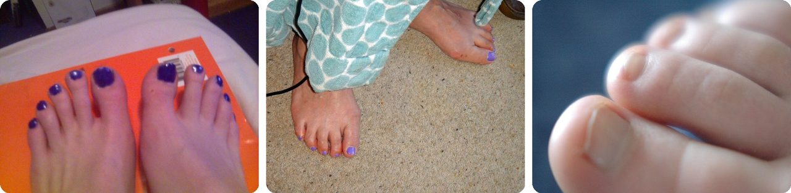
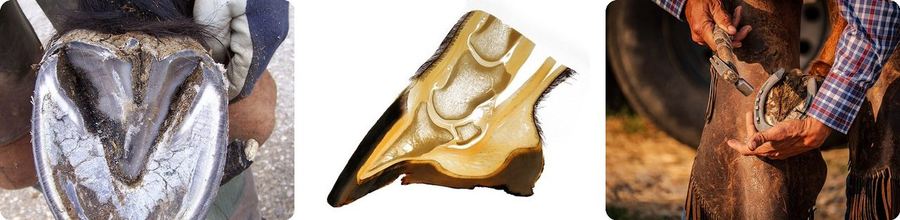
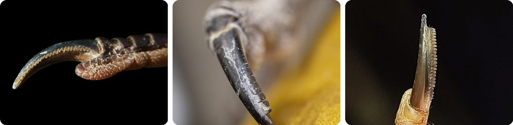

🌍 Top 10 Ongles de pied, griffes et sabots
19 novembre 2026
1. 💅 Tes ongles de pied poussent deux fois moins vite que tes ongles de main

Les ongles de main poussent d'environ 3,5 mm par mois, mais les ongles de pied seulement d'environ 1,6 mm, à peu près l'épaisseur d'une pièce de monnaie. Un ongle de pied entièrement neuf met 12 à 18 mois à repousser, contre 3 à 6 mois pour un ongle de main.Les ongles sont faits de kératine, la même matière solide que les griffes, les sabots et les cornes. La seule partie vivante est cachée sous la peau, à la base. L'ongle que tu vois, ce sont des couches de cellules mortes bien tassées : c'est pour ça que les couper ne fait pas mal.
Et voici une idée reçue à oublier : les ongles ne continuent pas de pousser après la mort. La peau se dessèche et se rétracte, alors les ongles ont juste l'air plus longs.
Vois ça comme un sabot sur chaque orteil, mais en beaucoup plus fin.
2. 〰️ Un sillon sur un ongle de pied peut montrer que tu as été malade il y a des mois
 Parfois, un sillon profond traverse l'ongle d'un côté à l'autre. On l'appelle ligne de Beau, d'après le médecin français Joseph Beau, qui l'a décrite en 1846.
Parfois, un sillon profond traverse l'ongle d'un côté à l'autre. On l'appelle ligne de Beau, d'après le médecin français Joseph Beau, qui l'a décrite en 1846.
Voici comment elle se forme. Une forte fièvre, une maladie ou une blessure fait faire une pause à la zone qui fabrique l'ongle sous la peau → ce morceau d'ongle sort plus mince → un creux se forme → le creux avance doucement vers le bout à mesure que l'ongle pousse.
Chez les enfants atteints de la maladie de Kawasaki, les lignes peuvent apparaître un à deux mois après le début de la fièvre. Comme un ongle de pied met plus d'un an à pousser entièrement, le creux peut rester visible longtemps.
C'est comme les cernes d'un arbre, mais pour les fois où tu as été malade.
3. 🐎 Le sabot d'un cheval est un ongle géant

Un sabot, c'est le bout d'un orteil recouvert d'une épaisse coque dure en kératine, la même matière que tes ongles. Le cheval n'a qu'un seul sabot à chaque pied : il marche donc sur quatre orteils en tout.Comme tes ongles, les sabots ne s'arrêtent jamais de pousser. Les chevaux sauvages les usent à peu près aussi vite qu'ils poussent, en marchant sur un sol rugueux.
Les chevaux qui vivent avec les humains ne marchent souvent pas assez sur un sol dur et rugueux, ou portent de lourdes charges sur les routes. Alors un maréchal-ferrant (un spécialiste des sabots) les taille et y cloue des fers pour les protéger.
En gros, un fer à cheval, c'est une coque de téléphone pour un ongle.
4. 🐈 Les chats rangent leurs griffes pour qu'elles restent pointues
 Presque tous les membres de la famille des chats ont des griffes qui rentrent dans la patte quand ils ne s'en servent pas. Rangées, elles ne frottent pas le sol, donc elles restent pointues.
Presque tous les membres de la famille des chats ont des griffes qui rentrent dans la patte quand ils ne s'en servent pas. Rangées, elles ne frottent pas le sol, donc elles restent pointues.
Les griffes de chat poussent aussi en couches. De temps en temps, une vieille couche extérieure arrête de pousser et se prépare à tomber → le chat griffe du bois ou un griffoir → la vieille couche s'en va et une nouvelle griffe bien pointue apparaît dessous.
Les chats ont aussi un ergot, placé haut sur l'intérieur des pattes avant. Il ne touche jamais le sol, donc il s'use moins et il est souvent plus pointu et plus long que les autres.
Autrement dit, le griffoir, c'est le taille-crayon du chat.
5. 🐸 La grenouille poilue se casse les os des orteils pour sortir des griffes
 La grenouille poilue vit en Afrique centrale, dans des pays comme le Cameroun. On l'appelle aussi la grenouille d'horreur, et ce n'est pas pour rien.
La grenouille poilue vit en Afrique centrale, dans des pays comme le Cameroun. On l'appelle aussi la grenouille d'horreur, et ce n'est pas pour rien.
Quand quelque chose l'attrape, la grenouille détache la pointe d'un os d'orteil de la petite boule qui la retient → elle pousse ces os pointus à travers sa propre peau → et la voilà avec des griffes. Elles sont en os, pas en kératine, donc ce ne sont pas de vraies griffes.
Les scientifiques pensent que les griffes rentrent ensuite pendant que la peau déchirée guérit. Les « poils » des mâles en période de reproduction ne sont pas non plus de vrais poils : ce sont de fines bandes de peau qui les aideraient peut-être à absorber plus d'oxygène.
Imagine transformer tes propres doigts en couteau de poche.
6. 🐒 Les lémuriens ont une « griffe de toilette » rien que pour se gratter
 Les lémuriens, les galagos et les loris ont des ongles plats sur la plupart de leurs orteils, comme nous. Mais le deuxième orteil de chaque pied porte une griffe de toilette recourbée.
Les lémuriens, les galagos et les loris ont des ongles plats sur la plupart de leurs orteils, comme nous. Mais le deuxième orteil de chaque pied porte une griffe de toilette recourbée.
Ils s'en servent pour se peigner le pelage et se gratter, surtout autour de la tête et du cou, les endroits difficiles à atteindre.
Les tarsiers ont des griffes de toilette sur deux orteils de chaque pied, le deuxième et le troisième. Leurs pieds ressemblent presque à des mains : le gros orteil peut attraper comme un pouce.
Vois ça comme un peigne intégré à un orteil.
7. 🪶 Certains oiseaux ont un peigne sur le doigt du milieu

Les oiseaux étalent de l'huile sur leurs plumes pour les garder en bon état, mais ils ne peuvent pas atteindre leur propre tête avec le bec. Alors beaucoup se servent d'une patte : ils transfèrent l'huile du bec à la patte, puis la frottent dans les plumes de leur tête.Les hérons, les engoulevents, les chouettes et les frégates ont, sur le doigt du milieu, une griffe avec de petites dents sur un côté, comme un peigne. On l'appelle griffe pectinée, et elle les aide peut-être à se peigner et à huiler leur tête.
Certains oiseaux se grattent en passant la patte par-dessus l'aile baissée, d'autres par-dessous, et la méthode peut dépendre de leur mode de vie.
En gros, ils se coiffent avec leurs ongles de pied.
8. 🐦 Les poussins de l'hoazin ont des griffes sur les ailes
 L'hoazin est un drôle d'oiseau d'Amérique du Sud à la crête hérissée, et c'est l'oiseau national du Guyana. Ses poussins naissent avec deux griffes sur chaque aile.
L'hoazin est un drôle d'oiseau d'Amérique du Sud à la crête hérissée, et c'est l'oiseau national du Guyana. Ses poussins naissent avec deux griffes sur chaque aile.
Ils s'en servent pour grimper. Quand un faucon attaque, les adultes font du vacarme pour le distraire → les poussins s'éloignent du nid → s'ils sont repérés, ils se laissent tomber dans l'eau en dessous, nagent sous la surface, puis remontent grâce aux griffes de leurs ailes et à leurs grandes pattes.
On les a autrefois comparés à l'Archaeopteryx, un oiseau ancien qui avait des griffes aux ailes. Mais les scientifiques pensent aujourd'hui que les griffes de l'hoazin sont une astuce plus récente, pour grimper avant de savoir voler.
Autrement dit, les bébés escaladent l'arbre comme une échelle, à la force des bras.
9. 🐜 Le grand fourmilier marche sur ses phalanges pour ménager ses griffes
 Le grand fourmilier d'Amérique centrale et du Sud a d'énormes griffes aux pattes avant, et celle du milieu est la plus grande. Il s'en sert pour éventrer les nids de fourmis et de termites, puis il lèche les insectes avec sa longue langue collante.
Le grand fourmilier d'Amérique centrale et du Sud a d'énormes griffes aux pattes avant, et celle du milieu est la plus grande. Il s'en sert pour éventrer les nids de fourmis et de termites, puis il lèche les insectes avec sa longue langue collante.
Pour éviter d'user ces griffes, il marche sur les phalanges de ses pattes avant, un peu comme un gorille ou un chimpanzé. Les griffes restent repliées, loin du sol.
Les pattes arrière, c'est différent : leurs griffes sont courtes, et il marche à plat dessus.
C'est comme marcher sur les poings pour ne pas abîmer ses outils.
10. 🦖 Un dinosaure avait les plus longues griffes de tous les animaux terrestres
 Le Therizinosaurus (« lézard faucheur ») vivait dans ce qui est aujourd'hui la Mongolie, il y a environ 69 à 66 millions d'années. C'était un mangeur de plantes qui pouvait mesurer jusqu'à 10 m (33 pieds) de long, et les os des griffes de ses mains dépassaient 50 cm (20 pouces), plus que l'avant-bras et la main d'un adulte mis bout à bout.
Le Therizinosaurus (« lézard faucheur ») vivait dans ce qui est aujourd'hui la Mongolie, il y a environ 69 à 66 millions d'années. C'était un mangeur de plantes qui pouvait mesurer jusqu'à 10 m (33 pieds) de long, et les os des griffes de ses mains dépassaient 50 cm (20 pouces), plus que l'avant-bras et la main d'un adulte mis bout à bout.
Quand les premières griffes ont été trouvées dans le désert de Gobi en 1948, le scientifique qui l'a nommé a cru qu'elles venaient d'un reptile géant ressemblant à une tortue, qui s'en servait pour récolter des algues.
Aujourd'hui, les spécialistes pensent qu'il utilisait surtout ses griffes pour tirer les branches vers sa bouche, même si ses bras puissants ont aussi pu l'aider à se défendre.
Imagine un sécateur de jardin aussi long que ton bras.
Le saviez-vous ?
Le casoar, un énorme oiseau qui ne vole pas, vivant en Australie et en Nouvelle-Guinée, a sur le doigt intérieur de chaque patte une griffe en forme de poignard qui peut mesurer 12,5 cm (5 pouces). Il donne des coups de pied avec ses pattes très puissantes, c'est pourquoi on le surnomme souvent « l'oiseau le plus dangereux du monde », et pendant la Seconde Guerre mondiale, on conseillait aux soldats en Nouvelle-Guinée de s'en tenir loin. Pourtant, les chiffres montrent que l'autruche blesse plus de gens : elle tue deux ou trois personnes par an en Afrique du Sud. De quoi se demander quels animaux sont vraiment les plus dangereux, et lesquels ont juste une réputation effrayante.
Crédits photo (Wikimedia Commons)
- #1: I painted my toenails <3 (flickr) by *~Much to My Dismay~*, CC BY 2.0
- #1: Purple Toenails - May 2011 - Well I Never (flickr) by Gareth1953 All Right Now, CC BY 2.0
- #1: Toes.jpg by unknown, Attribution
- #2: Big-toe-nail.jpg by 些細な日常, CC BY-SA 4.0
- #2: Beau's lines.JPG by LynnMcCleary, CC BY-SA 4.0
- #2: Beau's line on left, middle fingernail.jpg by Elipongo, Public domain
- #3: Hoof bottom view.jpg by Alex brollo, CC BY-SA 4.0
- #3: Equine hoof hc biovision.jpg by Dr. Christoph von Horst, CC BY-SA 3.0
- #3: Farrier Winthrop Washington.jpg by Guywelch2000, CC0
- #4: Cat paws and claws 1 2015-01-16.JPG by FASTILY, CC BY-SA 4.0
- #4: Black cat in repose.jpg by SMPL Reference, CC BY-SA 3.0
- #4: Cat yawn with exposed teeth and claws.jpg by DecafPotato, CC BY-SA 4.0
- #5: Astylosternus robustus · Mayoko, CG-NI, CG by no rights reserved, CC0
- #5: Hairy frog (Trichobatrachus robustus) 1.jpg by Melvin TOULLEC, CC BY-SA 4.0
- #5: Trichobatrachus robustus.JPG by Gustavocarra, CC BY-SA 4.0
- #6: Lemur catta toilet claw.jpg by Alex Dunkel (Maky), CC BY 3.0
- #6: Varecia variegata foot with toilet-claw.jpg by Maky (Alex Dunkel), CC BY 3.0
- #6: Galago moholi 276577285.jpg by i_c_riddell, CC BY 4.0
- #7: Ardea cinerea Putzkralle.jpg by Donkey shot (Christof Bobzin), CC BY 3.0
- #7: Barn Owl Pectinate Claw.jpg by Daniel Polin, CC BY-SA 4.0
- #7: Night Heron pectinate toe by Vedant Kasambe.jpg by Vedant Raju Kasambe, CC BY 4.0
- #8: Hoatzin chick.jpg by J. Arthur Thomson., Public domain
- #8: Opisthocomus hoazin · Careiro - Amazonas, Brasilien by no rights reserved, CC0
- #8: Hoatzin (flickr) by A.Davey, CC BY 2.0
- #9: Giant Anteaters - Brevard Zoo - Flickr - Rusty Clark (5).jpg by Rusty Clark from merritt usland FLA, CC BY 2.0
- #9: Myrmecophaga tridactyla · Minas Gerais, BR by no rights reserved, CC0
- #9: IMG_6346/Brazil/Mato Grosso Do Sul/Pantanal/Giant Antéater/Grand Fourmilier/Tamanoir (flickr) by dany13, CC BY 2.0
- #10: Therizinosaurus claw.jpg by Woudloper, CC BY-SA 3.0
- #10: Therizinosaurus claws lateral.jpg by Frank Black Noir, CC BY 2.0
- #10: Therizinosaurus TD.png by TotalDino, CC BY 4.0


_1.jpg){kind=link}


.jpg){kind=link}